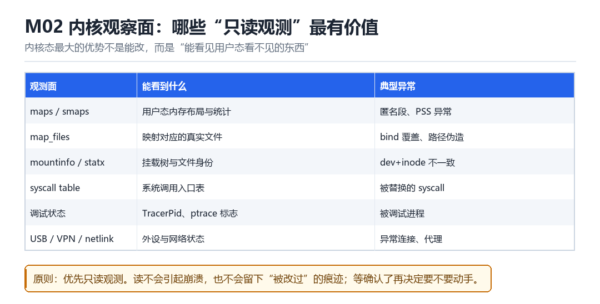

内核观察面与基础检测处理
maps/smaps/map_files、mountinfo/statx、syscall table、调试状态、USB/VPN/netlink/Binder 只读观测
内核态最大的优势不是能改，而是“能看见用户态看不见的东西”。
2.1 六个高价值观测面

| 观测面 | 能看到什么 | 典型异常 |
|---|---|---|
| maps / smaps | 内存布局与统计 | 匿名段、PSS 异常 |
| map_files | 映射对应的真实文件 | 路径伪造 |
| mountinfo / statx | 挂载树与文件身份 | dev+inode 不一致 |
| syscall table | 系统调用入口 | 被替换的 syscall |
| 调试状态 | TracerPid、ptrace 标志 | 被调试进程 |
| USB/VPN/netlink | 外设与网络 | 异常连接、代理 |
2.2 为什么优先“只读”
读不会引起崩溃，也不会留下“被改过”的痕迹。等你确认了异常，再决定要不要动手——这个顺序能避免 90% 的“改完才发现方向错了”。
2.3 syscall table 的两种用法
- 观测：对比表项与预期符号地址，发现被替换的项。
- 利用：替换某个 syscall 的入口，实现全局拦截（这是最“重”的一类 hook，痕迹也最明显）。
// 伪代码：把表里每项与 kallsyms 查到的地址比对
for (int i = 0; i < NR_syscalls; i++) {
if (table[i] != expected[i])
report("syscall %d replaced: %p != %p", i, table[i], expected[i]);
}2.4 本章自测
- 六个观测面里，哪个最能揭示“内容与身份不符”？
- 为什么优先只读观测？
- syscall 表被替换有什么特征？
- 如果目标内核用了不同的 syscall 组织方式，你怎么适配？
2.5 深入：map_files 为什么能戳穿伪装
/proc/pid/map_files/<start>-<end> 是一个符号链接，指向“这段映射对应的真实文件”。它绕过了路径层面的伪装——即使你在 maps 里把路径改成了 /system/lib64/libc.so，map_files 仍然指向真实的 inode。
grep libc /proc/self/maps
ls -l /proc/self/map_files/ | grep libc
# 两者不一致 = 有问题| 视图 | 来源 | 可否被轻易伪造 |
|---|---|---|
| maps 文本 | 内核拼接字符串 | 可以（改输出） |
| map_files | VMA 的 vm_file | 较难 |
| smaps | VMA + 统计 | 较难 |
| pagemap | 页表 | 很难 |
2.6 原理推演：为什么“内核视角”能看到用户态看不到的
因为用户态的一切观测，都是“内核把某些信息格式化后给你”。而内核自己可以直接读数据结构——没有格式化、没有过滤、也没有“按你的 namespace 裁剪”。
| 信息 | 用户态可见 | 内核态可见 |
|---|---|---|
| 其他进程的 maps | 否 | 是 |
| 页表内容 | 否 | 是 |
| 其他 namespace 的挂载 | 否 | 是 |
| task 的 cred | 部分 | 全部 |
这就是为什么“内核级检测”比“App 级检测”强：它不受“被检测者能改什么”的限制。
2.7 数据细节：遍历所有 task 的正确姿势
rcu_read_lock();
for_each_process_thread(g, t) {
// 读 t 的字段
}
rcu_read_unlock();常见错误：在循环里 sleep 或做可能睡眠的操作。RCU 读侧临界区不能睡眠，否则会死锁或读到已释放的对象。
2.8 深入：smaps 里哪些字段最有用
| 字段 | 含义 | 异常信号 |
|---|---|---|
| Rss / Pss | 驻留内存 | 与预期不符 |
| Shared_Clean/Dirty | 共享页 | 共享异常高 |
| Private_Dirty | 私有脏页 | 突增 |
| VmFlags | 映射标志 | 出现不该有的标志 |
VmFlags 特别有用：它能告诉你“这段是不是可执行、是不是共享、是不是被锁定”。很多异常映射在 VmFlags 上比在权限位上一目了然。
2.9 深入：syscall 表在不同内核上的形态
// 1. 经典数组
sys_call_table[NR_syscalls]
// 2. 带 wrapper 的表（带签名检查）
// 3. 分段 / 间接表（新内核 / 加固）写“检测 syscall 表”的代码前，先 dump 一下当前内核的实际结构。写死结构是最常见的失败原因。
2.10 实战：只读观测的一个完整例子
// 遍历 mm->mmap，检查 (vm_flags & VM_EXEC) && !vma->vm_file
int n = 0;
for (vma = mm->mmap; vma; vma = vma->vm_next)
if ((vma->vm_flags & VM_EXEC) && !vma->vm_file) n++;
pr_info("anon exec mappings: %d\n", n);把探针放到 proc 的上游
检测线程正一行行读自己的 /proc/self/maps，把每个 r-xp 段的 CRC 记下来；另一条线程翻着 map_files 核对路径，再看一眼 TracerPid。这些动作在用户态看起来天衣无缝。把视角降到 EL1：你能看到它读之前内核遍历的 mm->mmap 链表，能看到 VMA 背后真实的 vm_file 与 inode，也能看到它自己看不到的 task->ptrace 与 per-task 的调试状态。观测面比被观测者高一层，这就是内核态最实在的优势。
而且这层优势几乎免费：读不会改变对象，不会制造“被改过”的痕迹，也不会让目标进程崩。先把六个面各采一份快照，确认异常落在哪一面，再决定要不要动手——顺序反过来，最容易在错误的方向上改出一堆难以回退的状态。
一次 maps 读取，六个可截点
- 检测线程 → 对 /proc/self/maps：发起
open，proc 层为它建seq_file并绑到该 pid 的mm，结果是接下来每次read都从这张 VMA 链表生成文本；注意seq_file分段输出，一次读到的可能只是半张表。 - 内核 → 对 mm->mmap 链表：逐项取
vm_start、vm_end、vm_flags、vm_file、vm_pgoff，结果是拼出/proc/pid/maps的每一行；在这里读vm_file是否为 NULL，就能把匿名可执行段与文件映射段分开，这是用户态文本里最容易被伪装的一列。 - 你的只读 kprobe → 对 show_map_vma 一类生成函数：记录入参与返回的行内容而不修改，结果是提前知道“检测方即将看到什么”；回调里不能睡眠、不能分配大内存、不能长时间持锁。
- 检测线程 → 对 /proc/self/map_files：用映射区间名反查 fd 与
dentry，结果是拿到“路径文本对应的真实文件”；若这里给出的 inode 与 maps 行里的路径/dev 对不上，就是路径被伪造的直接证据。 - 内核 → 对 mountinfo 与 statx：给出挂载树、
s_dev与i_ino，结果是给每条映射补上“文件身份”；dev+inode 比路径字符串稳定得多，也是交叉校验的锚点。 - 检测线程 → 对 syscall table、TracerPid、netlink/Binder 状态：比对入口地址、非零的 tracer 与异常连接，结果得出“是否被替换、是否被调试、是否被代理”的结论；你的观测点就放在它取数之前。
| 观测面 | 内核里的真实数据源 | 用户态可见性 | 异常信号 |
|---|---|---|---|
| maps / smaps | mm->mmap 链表与 rss_stat | 可见 | 匿名可执行段、PSS 突增 |
| map_files | vm_file->f_path 对应 dentry | 可见但文本易伪装 | 路径与 inode 不符 |
| mountinfo / statx | mount namespace、s_dev、i_ino | 可见 | dev+inode 与路径冲突 |
| syscall table | sys_call_table 或跳转表 | 间接 | 表项落在非内核文本区 |
| 调试状态 | task->ptrace、TracerPid、ptrace_scope | 可见 | TracerPid 非零 |
| USB / VPN / netlink / Binder | net ns、sk、binder_proc | 部分可见 | 异常连接与代理 |
只读观测也要按规矩来
很多人以为“只读”就等于零代价，其实不然。seq_file 的 start/stop 之间、kprobe 的回调里、中断上下文里，都有“不能睡眠”这条硬约束；在高频遍历的 VMA 路径上打一条 printk，可能把一次几毫秒的 maps 读取拖成几十毫秒，进而让基于超时的检测换个分支。观测代码本身会改变时序，所以第一步永远是先记差异，再动手改，而且差异要在同一台机器同一套用例上复现三次才算数。
把一次差异做成可复现的三拍
- 你 → 对干净环境：同一台机器、同一套用例跑三次，记录六个观测面的基线值，结果是得到一张带波动范围的对照表；没有基线，后面所有“异常”都只是感觉。
- 你 → 对修改环境：只改一个变量再跑三次，把差异落到具体某一面某一行，结果是能说出“是 maps 的匿名段多了两条”而不是“内存不太对”。
- 你 → 对结论：换一台同型号设备复跑，差异仍在同一位置才算成立；只在单台出现的差异，多半是时序或缓存噪声。
可复现实验：抓一次读取，验证两条路径自洽
# 1. 确认符号可解析（记下原值，实验后恢复）
cat /proc/sys/kernel/kptr_restrict
cat /proc/kallsyms | grep -E ' show_map_vma| proc_pid_maps_op| do_syscall_64'
# 成功：三个符号都有非零地址；失败：地址全 0 = kptr_restrict 生效，先按原值调整
# 2. 挂只读 kprobe，触发一次目标读取
insmod /data/local/tmp/observe.kpm pid=$PID
cat /proc/$PID/maps > /dev/null
ls -l /proc/$PID/map_files | head -n 5
cat /proc/$PID/status | grep -E 'TracerPid|VmRSS'
dmesg | tail -n 30
# 成功：日志给出 VMA 条数、每个 r-xp 段的 vm_file 是否为空、TracerPid
# 失败：日志为空 = kprobe 没挂上；出现 oops = 回调里做了睡眠操作
# 3. 交叉校验：同一段在两条路径上必须一致
cat /proc/$PID/maps | grep -E 'r-xp' | head -n 3
stat -Lc '%d %i' /proc/$PID/map_files/$(awk 'NR==1{print $1}' <<< $(cat /proc/$PID/maps)) 2>/dev/null
# 成功：dev+inode 与 maps 行的设备号、偏移自洽；失败：不一致 = 路径被改写过把“两条枚举路径是否自洽”这句话记牢，它会在后面反复出现：Frida 部 F10 讲线程结构体处理时，检测方同时走 /proc/self/task 与 libc 线程链表，两边数量对不上就是最强信号；LSPosed 部 L09 讲侧信道与结构差分检测，同样是用交叉校验代替单点判断。M02 的六个只读面，正是给这种校验提供上游事实的地方。